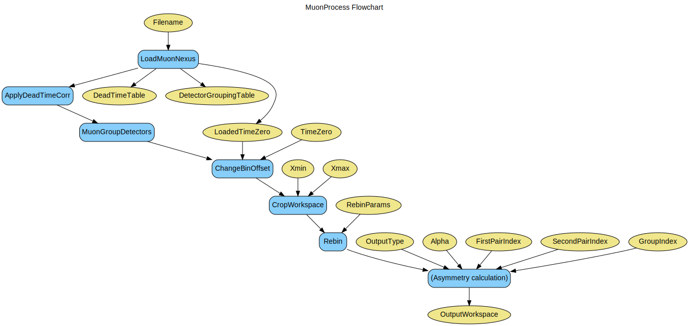

\(\renewcommand\AA{\unicode{x212B}}\)
MuonProcess v1¶
{kind=link}
MuonProcess dialog.¶
Summary¶
Processes and analyses Muon workspace.
Properties¶
Name |
Direction |
Type |
Default |
Description |
|---|---|---|---|---|
InputWorkspace |
Input |
Mandatory |
Input workspace loaded from file (e.g. by LoadMuonNexus) |
|
Mode |
Input |
string |
Combined |
Mode to run in. CorrectAndGroup applies dead time correction and grouping; Analyse changes bin offset, crops, rebins and calculates asymmetry; Combined does all of the above. Allowed values: [‘Combined’, ‘Analyse’, ‘CorrectAndGroup’] |
SummedPeriodSet |
Input |
int list |
Comma-separated list of periods to be summed |
|
SubtractedPeriodSet |
Input |
int list |
Comma-separated list of periods to be subtracted from the SummedPeriodSet |
|
ApplyDeadTimeCorrection |
Input |
boolean |
False |
Whether dead time correction should be applied to loaded workspace |
DeadTimeTable |
Input |
Table with dead time information, e.g. from LoadMuonNexus.Must be specified if ApplyDeadTimeCorrection is set true. |
||
DetectorGroupingTable |
Input |
Table with detector grouping information, e.g. from LoadMuonNexus. |
||
TimeZero |
Input |
number |
Optional |
Value used for Time Zero correction |
LoadedTimeZero |
Input |
number |
Mandatory |
Time Zero value loaded from file, e.g. from LoadMuonNexus. |
RebinParams |
Input |
dbl list |
Params used for rebinning. If empty - rebinning is not done. |
|
Xmin |
Input |
number |
Optional |
Minimal X value to include |
Xmax |
Input |
number |
Optional |
Maximal X value to include |
OutputType |
Input |
string |
PairAsymmetry |
What kind of workspace required for analysis. Allowed values: [‘PairAsymmetry’, ‘GroupAsymmetry’, ‘GroupCounts’] |
PairFirstIndex |
Input |
number |
Optional |
Workspace index of the first pair group |
PairSecondIndex |
Input |
number |
Optional |
Workspace index of the second pair group |
Alpha |
Input |
number |
1 |
Alpha value of the pair |
GroupIndex |
Input |
number |
Optional |
Workspace index of the group |
OutputWorkspace |
Output |
Mandatory |
An output workspace. |
|
CropWorkspace |
Input |
boolean |
True |
Determines if the input workspace should be cropped at Xmax, Xmin is still aplied. |
WorkspaceName |
Input |
string |
The name of the input workspace |
Description¶
The algorithm replicates the sequence of actions undertaken by MuonAnalysis in order to produce a Muon workspace ready for fitting. It is a workflow algorithm used internally by this interface.
It acts on a workspace loaded from a Muon NeXus file, most commonly by LoadMuonNexus v2.
Specifically:
Apply dead time correction
Group the workspaces
Offset, crop and rebin the workspace
Perform counts or asymmetry calculation to get the resulting workspace.
MuonProcess can be applied in three different modes. * CorrectAndGroup applies the dead time correction and groups the workspaces only, returning the output of this step without performing the rest of the analysis. * Analyse performs the second half only, i.e. offset time zero, crop, rebin and calculate asymmetry. * Combined performs the whole sequence of actions above (CorrectAndGroup followed by Analyse).
Analysis¶
The asymmetry is calculated from either one or several provided data acquisition period workspaces (only the first one is mandatory). When more than one are supplied, the algorithm merges the counts and then calculates the asymmetry.
The way in which period data is merged before the asymmetry calculation is determined by SummedPeriodSet and SubtractedPeriodSet. For example, setting SummedPeriodSet to “1,2” and SubtractedPeriodSet to “3,4” would result in the period arithmetic \((1+2)-(3+4)\).
The algorithm supports three output types:
PairAsymmetry - asymmetry is calculated for a given pair of groups, using the alpha value provided. The pair to use is specified via PairFirstIndex and PairSecondIndex.
GroupAsymmetry - asymmetry between the given group (specified via GroupIndex) and the Muon exponential decay is calculated.
GroupCount - no asymmetry is calculated, pure counts of the specified group (via GroupIndex) are used.
Note that the first part of the algorithm will have grouped the spectra in the input workspaces, hence the term ‘group’ is used here instead of ‘spectrum’.
Workflow¶
Usage¶
Note
To run these usage examples please first download the usage data, and add these to your path. In Mantid this is done using Manage User Directories.
Note
For examples of applying custom dead times, please refer to ApplyDeadTimeCorr v1 documentation.
For examples of applying custom grouping, please refer to MuonGroupDetectors v1 documentation.
Example - Integrated pair asymmetry for MUSR run (combined mode):
# Begin by loading data into a workspace to process
load_result = LoadMuonNexus(Filename = "MUSR0015189.nxs",
DetectorGroupingTable = "grouping",
OutputWorkspace = "loadedWS")
loaded_time_zero = load_result[2] # time zero loaded from file
grouping = mtd['grouping'] # detector grouping loaded from file
grouping = grouping.getItem(0) # grouping here is a WorkspaceGroup - use table for first period
MuonProcess(InputWorkspace = "loadedWS",
Mode = "Combined",
DetectorGroupingTable = grouping,
SummedPeriodSet = "1",
LoadedTimeZero = loaded_time_zero,
TimeZero = 0.55,
Xmin = 0.11,
Xmax = 12,
OutputType = "PairAsymmetry",
PairFirstIndex = 0,
PairSecondIndex = 1,
Alpha = 1.0,
OutputWorkspace = "MuonProcess_output")
processed = mtd['MuonProcess_output']
output_int = Integration(processed)
print('Integrated asymmetry for the run: {0:.3f}'.format(output_int.readY(0)[0]))
Output:
Integrated asymmetry for the run: 1.701
Example - Pair asymmetry for a single period (analysis only):
# Create example workspace
y = [1,2,3] + [4,5,6]
x = [1,2,3] * 2
first_period = CreateWorkspace(x, y, NSpec=2)
input = GroupWorkspaces(first_period)
# Grouping
grouping = CreateEmptyTableWorkspace()
grouping.addColumn('vector_int', 'detectors')
grouping.addRow([range(1,2)])
output = MuonProcess(InputWorkspace = input,
Mode = "Analyse",
DetectorGroupingTable = grouping,
SummedPeriodSet = "1",
LoadedTimeZero = 0,
OutputType = 'PairAsymmetry',
PairFirstIndex = 1,
PairSecondIndex = 0,
Alpha = 0.5)
print('Output: {}'.format(output.readY(0)))
Output:
Output: [ 0.77777778 0.66666667 0.6 ]
Example - Group asymmetry for two periods (analysis only):
# Create example workspaces
y1 = [100,50,10]
y2 = [150,20,1]
x = [1,2,3]
CreateWorkspace(x, y1,OutputWorkspace="first")
first_period = mtd["first"]
first_period.mutableRun().addProperty('goodfrm',10,True)
CreateWorkspace(x, y2,OutputWorkspace="second")
second_period = mtd["second"]
second_period.mutableRun().addProperty('goodfrm',10,True)
input = GroupWorkspaces([first_period, second_period])
# Grouping
grouping = CreateEmptyTableWorkspace()
grouping.addColumn('vector_int', 'detectors')
grouping.addRow([range(1,1)])
grouping.addRow([range(2,2)])
output = MuonProcess(InputWorkspace = input,
Mode = "Analyse",
DetectorGroupingTable = grouping,
SummedPeriodSet = 1,
SubtractedPeriodSet = 2,
LoadedTimeZero = 0,
OutputType = 'GroupAsymmetry',
GroupIndex = 0,Xmin=0,Xmax=4)
print('Output: {}'.format(output.readY(0)))
Output:
Output: [-0.44618444 0.54537717 0.24908794]
Categories: AlgorithmIndex | Workflow\Muon
Source¶
C++ header: MuonProcess.h
C++ source: MuonProcess.cpp